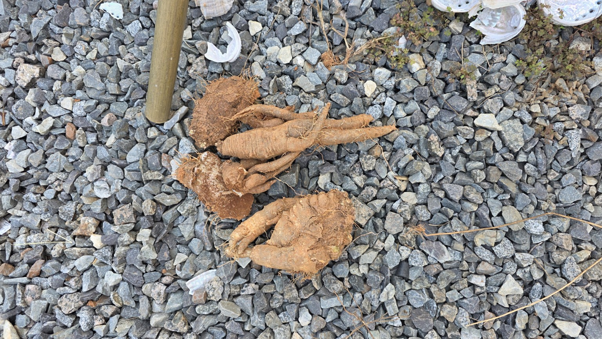

모아 둔 삭과
용기에 잎·줄기와 함께 모은 녹색·갈색 삭과를 촬영했습니다.
화곡농장 · 수확과 채종
2026.09.23채취한 삭과, 흙에서 드러난 뿌리,
수확물을 정리한 모습을 원본 자료로 남깁니다.

| 작업일 | 2026년 9월 23일 |
|---|---|
| 장소 | 화곡농장 |
| 기록 내용 | 더덕 수확 및 더덕 씨앗 채취 관련 현장 기록 |
| 자료 구성 | 원본 사진 7장 · 원본 영상 3개 · 웹 재생용 영상 3개 · Markdown · HTML |
| 시각 기준 | 파일명에 나타난 12:47:11~13:54:45. 실제 작업 소요시간을 뜻하지 않습니다. |
| 미기록 사항 | 수확량·정확한 수량, 재배 연수, 실측 크기, 정확한 필지, 종자 분리·건조 완료 여부 |
용기에 잎·줄기와 함께 모은 녹색·갈색 삭과를 촬영했습니다.
주변 식생에서 파낸 자리로 이동한 영상과 흙에서 드러난 뿌리를 기록했습니다.
수확물을 자갈 바닥에 놓고 전체 형태와 굵은 부분을 여러 각도에서 남겼습니다.
잎·줄기와 함께 모아 둔 더덕 삭과가 보입니다. 녹색과 갈색 부분이 함께 있지만, 이 사진만으로 씨앗의 성숙도나 발아 가능성을 확정할 수는 없습니다.
용기에 모아 둔 잎·줄기와 녹색 및 갈색 삭과가 보입니다. 분리한 씨앗 자체를 촬영한 사진은 아닙니다.
원본 JPG · 20260923_124711.jpg붉은 흙을 걷어 낸 자리에 굵은 뿌리가 드러나 있습니다. 여러 갈래로 나뉜 형태와 주변 흙 상태를 기록했습니다. 12시대에도 이미 뿌리 굴취 현장이 보입니다.
붉은 흙을 걷어 낸 자리에서 굵고 갈라진 뿌리가 드러나 있습니다.
원본 JPG · 20260923_124728.jpg앞 사진과 같은 굴취 현장을 가까운 각도에서 기록했습니다. 뿌리와 주변 흙 상태를 볼 수 있습니다.
원본 JPG · 20260923_124729.jpg자갈 바닥에 놓인 수확물의 전체 배치, 길게 뻗은 뿌리, 굵은 분지부와 표면을 기록했습니다. 비슷한 구도의 사진도 각각의 원본으로 보존했습니다.
자갈 바닥 위에 놓은 수확물의 전체 배치와 여러 갈래로 나뉜 뿌리 형태를 기록했습니다.
원본 JPG · 20260923_135437.jpg길쭉한 뿌리, 갈라진 부분, 잔뿌리와 흙이 묻은 표면을 가까이 기록했습니다.
원본 JPG · 20260923_135441.jpg앞 사진과 비슷한 구도지만 별개의 원본입니다. 임의로 중복 삭제하지 않고 보존했습니다.
원본 JPG · 20260923_135442.jpg넓고 굵은 부분과 옆으로 뻗은 뿌리, 표면의 흙·주름·틈을 가까이 보여 줍니다.
원본 JPG · 20260923_135445.jpg원본 HEVC 영상은 그대로 보관하고, 웹 플레이어에는 H.264/AAC 사본을 연결했습니다. 아래 길이는 원본 파일에서 읽은 값이며, 장면을 늘리거나 새로 생성하지 않았습니다.
자갈 바닥에 놓인 수확물 전체에서 뿌리의 굵기와 갈라진 부분 쪽으로 화면이 이동합니다.
원본 MP4 내려받기 · 1.75 MB| 시각 | 구분 | 원본 파일 | 내용 | 크기 |
|---|---|---|---|---|
| 12:47:11 | 사진 | 20260923_124711.jpg | 채취한 더덕 삭과 | 0.43 MB |
| 12:47:13 | 영상 | 20260923_124713.mp4 | 주변 식생에서 굴취 자리로 | 4.29 MB |
| 12:47:25 | 영상 | 20260923_124725.mp4 | 드러난 뿌리의 현장 영상 | 2.39 MB |
| 12:47:28 | 사진 | 20260923_124728.jpg | 흙에서 드러난 더덕 뿌리 | 0.49 MB |
| 12:47:29 | 사진 | 20260923_124729.jpg | 굴취 현장 가까이 보기 | 0.41 MB |
| 13:54:37 | 사진 | 20260923_135437.jpg | 수확한 더덕 전체 모습 | 0.67 MB |
| 13:54:39 | 영상 | 20260923_135439.mp4 | 수확물의 전체와 근접 모습 | 1.75 MB |
| 13:54:41 | 사진 | 20260923_135441.jpg | 길게 뻗은 뿌리와 분지 | 0.46 MB |
| 13:54:42 | 사진 | 20260923_135442.jpg | 같은 수확물의 다른 사진 | 0.50 MB |
| 13:54:45 | 사진 | 20260923_135445.jpg | 굵은 분지부 근접 기록 | 0.40 MB |
이전 페이지의 “12:47:28·29 삭과 근접 사진”은 잘못된 설명이었습니다. 실제로는 땅에서 드러난 더덕 뿌리입니다. 12:47:25 영상도 같은 뿌리 현장이며, 12:47:13 영상은 주변 식생에서 굴취 자리로 이동합니다.
따라서 “12시대 씨앗 채취 → 13시대 굴취 시작”이라는 순서를 확정하지 않습니다. 이 페이지의 시간은 원본 파일명 기준이며, JPG 촬영 일시 EXIF는 확인되지 않았습니다.
초기에 생성했던 MD·HTML은 source-documents 폴더에 수정 없이 보존했습니다. 당시 포함된 일반 채종·건조·보관 조언을 현장에서 확인한 사실처럼 이 기록에 옮기지 않았습니다.
본문, 사진 설명, 영상, 전체 파일 목록을 함께 보관합니다. 사진 7장과 영상 3개는 처음 첨부된 파일과 바이트 단위로 동일합니다.
ZIP은 압축을 모두 푼 다음 record.html 또는 index.html을 여세요. 사진·영상 폴더를 문서와 함께 두어야 합니다. 로컬에서 열 때 전체 ZIP 버튼은 숨겨집니다.